The National Arts Centre
I was fortunate to work on a creative look for the 2024 - 2025 Season Campaign of the National Arts Centre of Canada, through Banfield Agency.
Creative Brief:
An extendable creative look & visual language to celebrate the NAC’s New Season by showcasing its diverse programming and reinforcing its role as a vibrant cultural hub for all audiences.
Target Audience:
- Primary: Loyal NAC patrons, subscribers & single-ticket buyers.
- Secondary: Younger & potential attendees seeking meaningful arts experiences.
Key Message:
The NAC is where Canadians come together to experience the best in performing arts, from music and theatre to dance, in a welcoming and inspiring space.
Tone of Voice:
Fun, humble, inclusive, creative, engaging, celebratory and emotionally resonant. Warm and inviting, while reinforcing the NAC’s national significance.
Inspiration & Concept:

The Brush Stroke: Artistic brush strokes like live performances, are best experienced in person. Just as standing in front of a painting allows you to see and feel each stroke up close, live shows bring an energy that can only be fully appreciated in the moment.
Drawing inspiration from both traditional art and the NAC’s hexagonal architecture , I combined the two ideas and arranged brushstrokes in concentric hexagons to create a visually striking composition that surrounds the artists, making them stand out.
Visual Treatment:
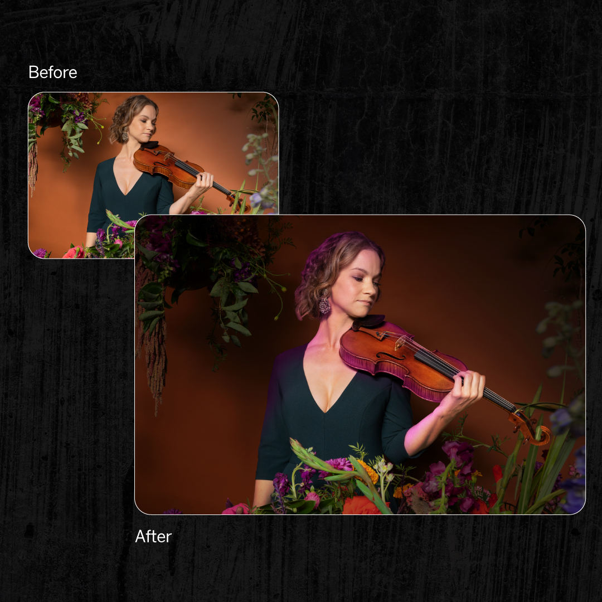
Imagery:
I adjusted the artist/performer images to create a darker background and setting while keeping the subject naturally integrated, creating a spotlight effect on the artist/performer.
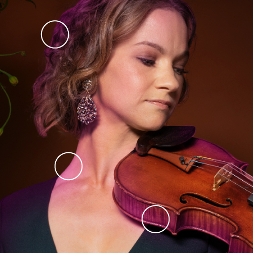
Later, I also added subtle coloured light spills from the brushstroke-textured hexagons to smoothly integrate the artist into the scene, making the composition feel unified.
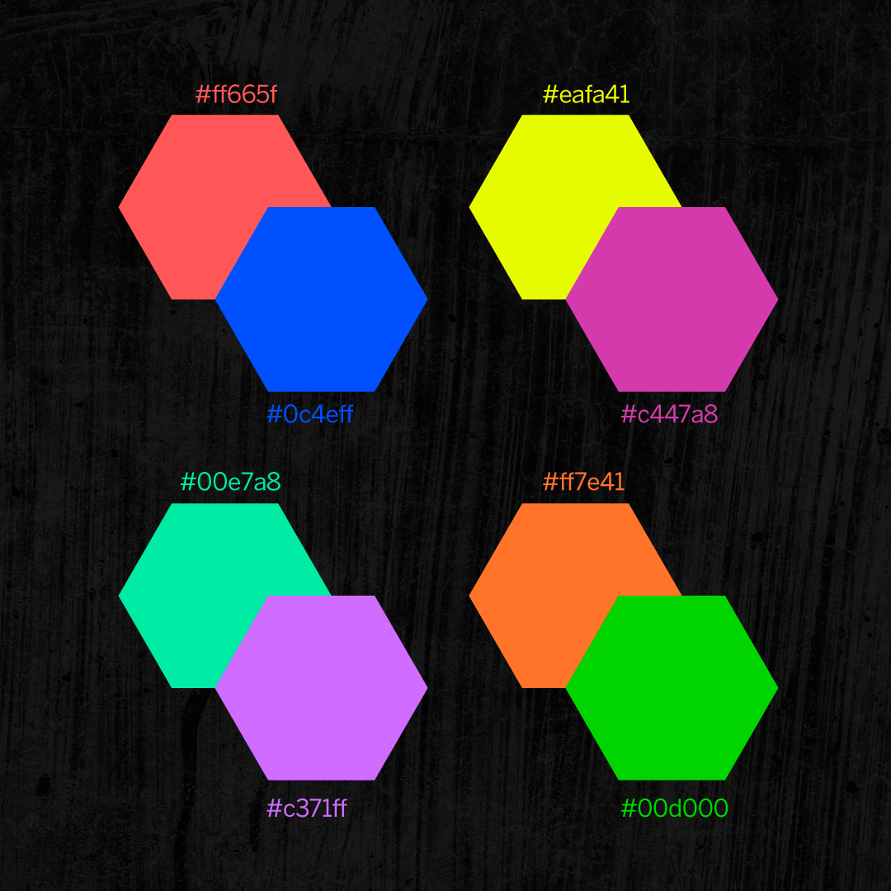
Colours:
With the Season Campaign being the NAC's opportunity to start anew, the chosen colors were selected to showcase:
- Rebirth & renewal: as this is the NAC’s second full season post-pandemic.
- NAC's role: as a vibrant cultural hub, celebrating diverse artistic expressions.
- Inclusivity: Embracing a modern, youthful, and an inclusive aesthetic.
- Spotlight: The bold pairings of colors create striking contrasts that draw attention against the darker backdrop, like spotlights on stage.
Together, they reflect the evolving cultural landscape of Canada, inviting audiences of all backgrounds to engage with the arts.
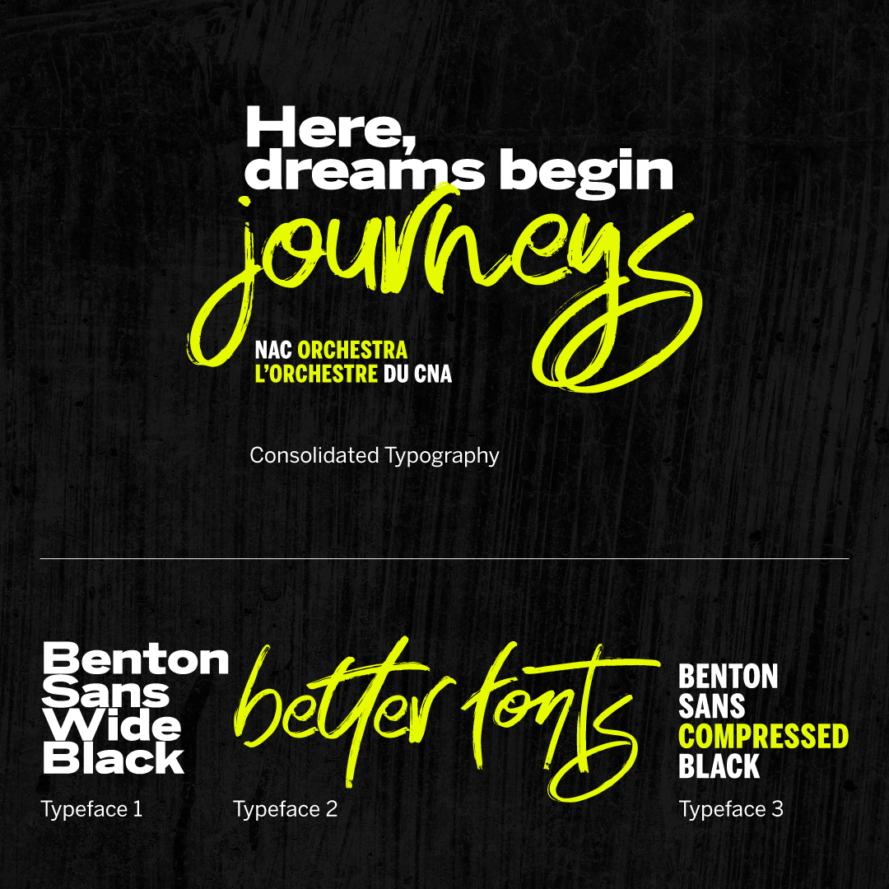
Typography:
Benton Sans was the primary typeface, chosen for it's modern and clean look. The thick, blocky strokes & stems of this typeface grabs attention and announces the message in a bold way.
Taking into account the brushstroke concept, I chose a brush typeface, Better Fonts, to visually contrast the blocky Benton Sans and create an aesthetic typographic combination.
To complement the typefaces, smaller brushstroke design elements were created to keep a cohesive visual language in the campaign look.
Key Visuals:
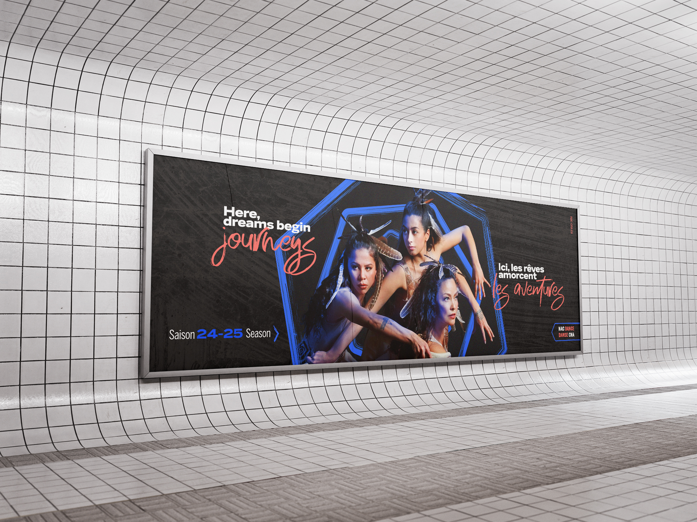
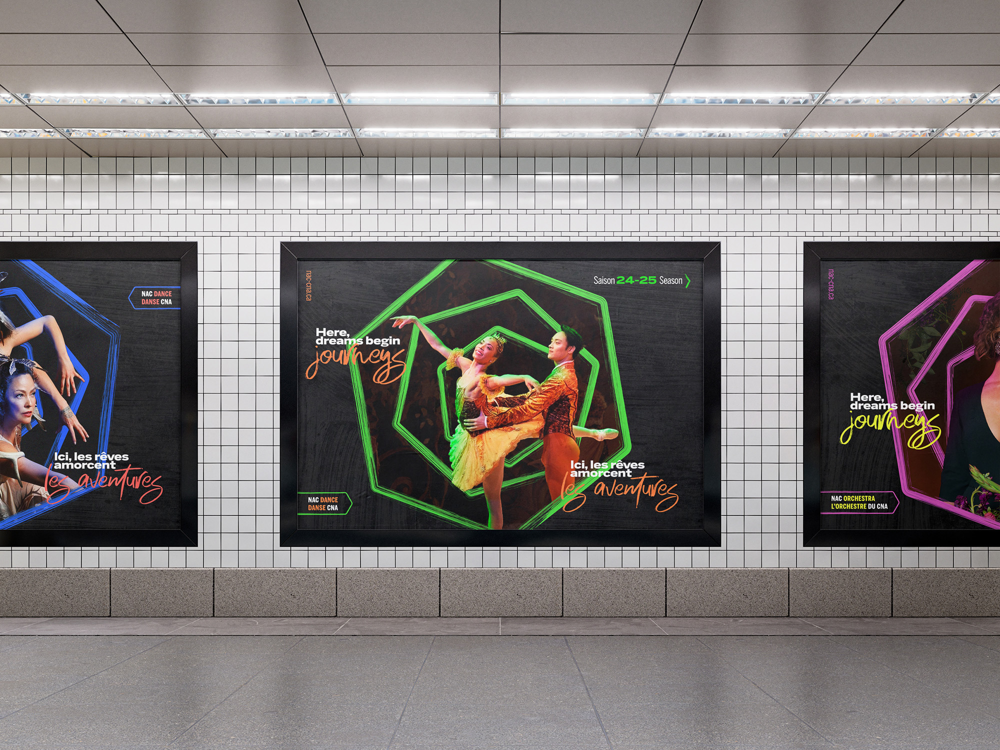
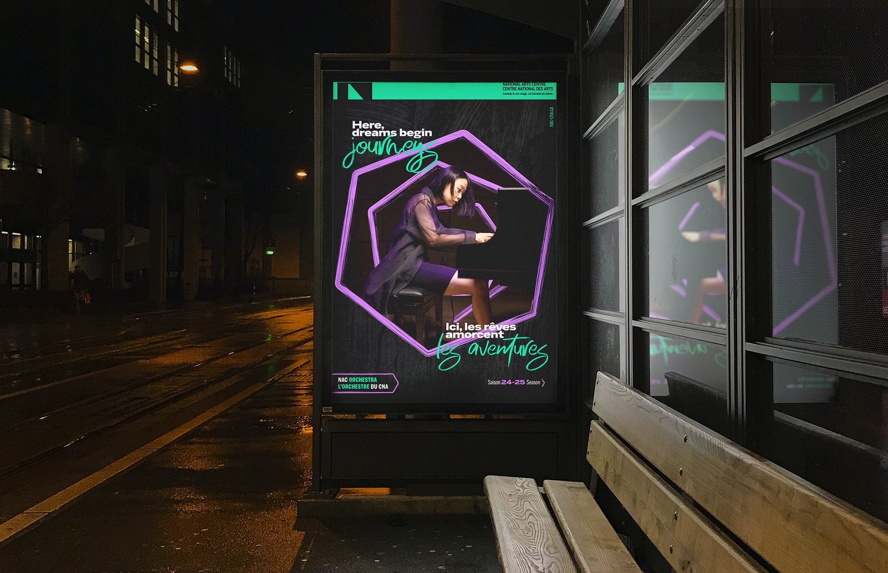
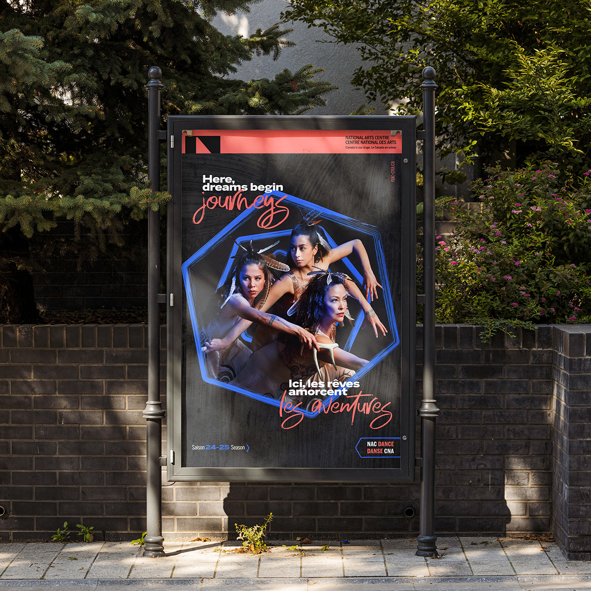
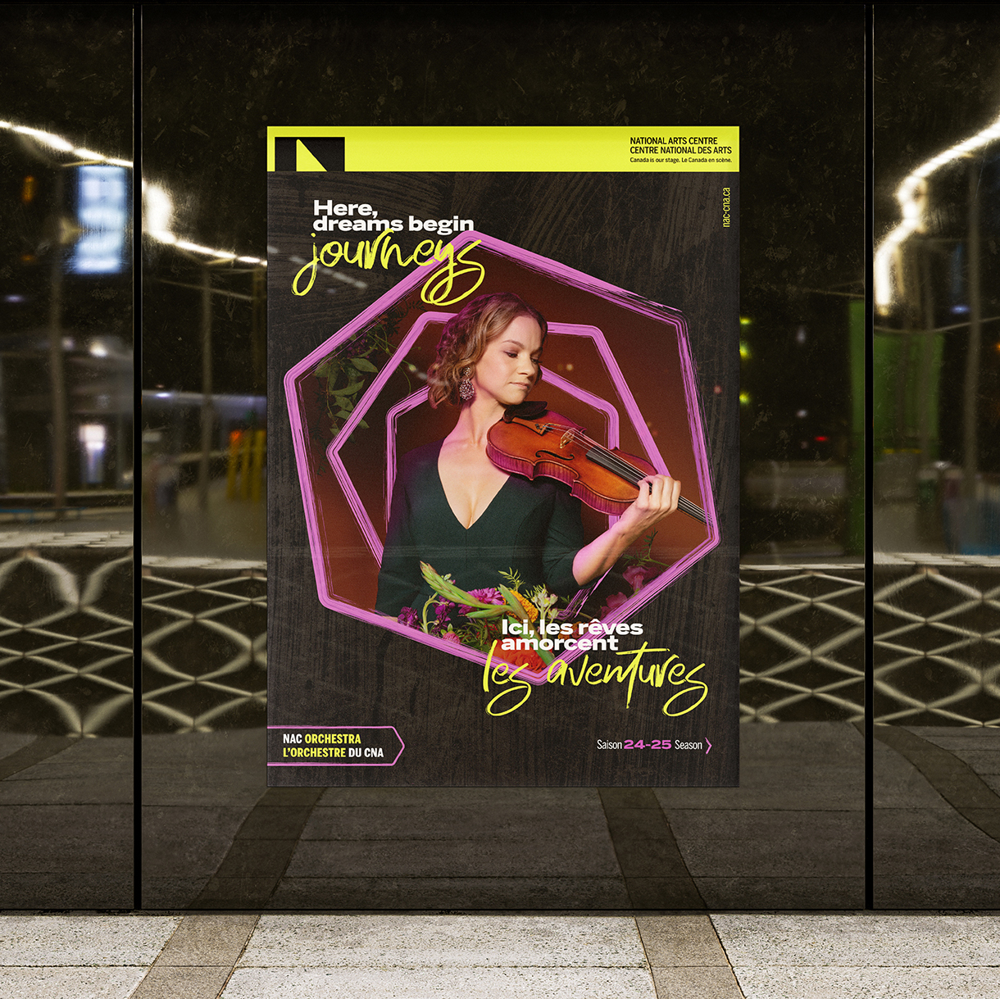
Social Media:
A large part of the campaign was to be executed digitally as social media ads and posts.
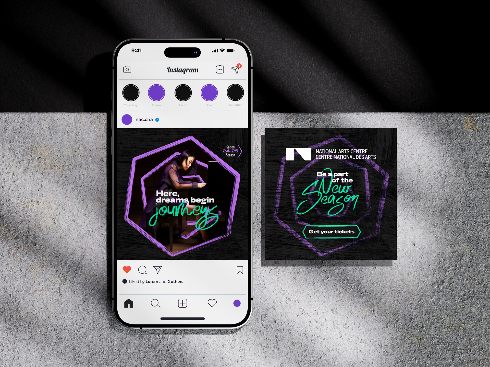
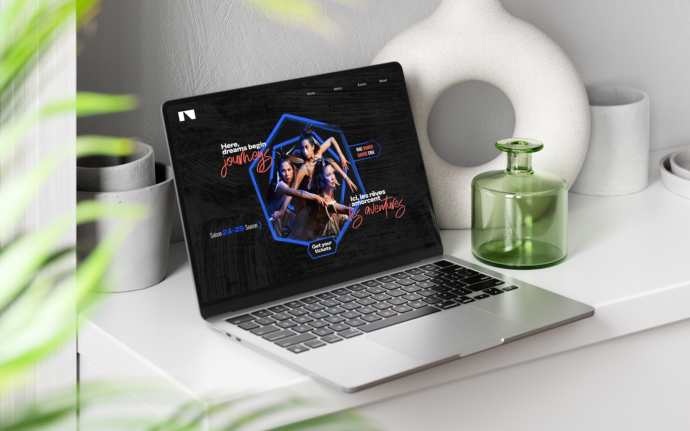
Motion was required to be an integral part
of the look so that it could be extended to
digital
screens
and garner more reach on social media.
Here's how I'd conceptualised the motion for
the
campaign:
The Kipnes Lantern:
The Kipnes Lantern is a 21-metre-high transparent LED screen that wraps around the National Arts Centre's glass atrium. It's a unique digital canvas that can be seen from the street and is visible to the public 24/7. The campaign look was also designed to be displayed on the Lantern, bringing the energy of the Season Campaign directly to the audience.
Thank you for scrolling till the end.